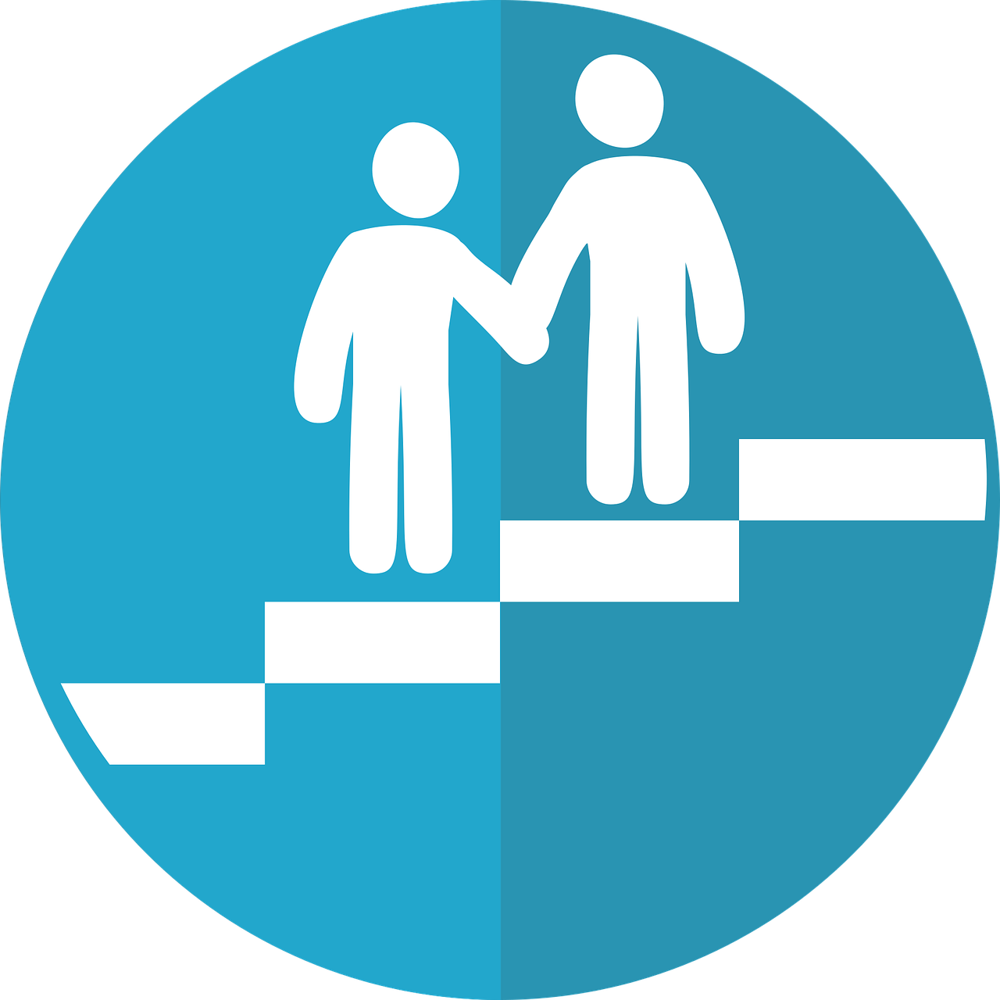

After years of arduous coursework, many graduates leave college with crippling student debt but without a well-defined career path. Both grads and their families have high hopes that a rewarding job will follow promptly after graduation. When this desired outcome is not realized, disappointment and frustration set in.
Celeste Sarne, a parent of a college grad, offered her thoughts on this predicament. “By the time college graduation arrives, you’re excited and ready for your child’s journey to begin,” she said. “Suddenly though, your role is unclear. Do you help with their job search or let them navigate on their own?”
Over 40% of recent grads are underemployed according to a survey conducted by Gallup and Strada Education Network, meaning their first jobs out of college do not require degrees. Worse yet, these workers are five times more likely to remain underemployed after five years than those who initially took a job requiring a degree.
“Plus, today’s job market differs greatly from those of previous generations. Technology has altered the application process, and people tend to switch jobs every few years. A generation ago, workers stayed at the same job for decades. Because of these changes, parents may offer outdated career advice and fail to empathize with the younger generation’s career troubles.”
During the progression from high school to college, parents and guidance counsellors nudge students into a stable higher educational orbit. In contrast, the college graduate typically confronts the transition from college to workplace alone. Campus career centers exist, but they often have inadequate resources, offering generalized career-related support rather than individualized help for each student’s unique career path.
The same grads, who just a few years earlier depended on their parents to guide them through the financial aid and college application processes, now refuse to reach out to them for career advice because they wish to assert their independence as young adults.
Spencer Bonfiglio, a graduate with an English degree from Seton Hill University, shared his thoughts on why grads are reluctant to ask their parents for career help. “After living away from home for years, grads believe that relying on mom and dad would be a step backward,” he said.
Herein lies the challenge: With minimal support from universities and parents, how do qualified grads find proper employment?
Personalized mentoring, confident storytelling that highlights a grad’s overall profile, and networking are vital avenues to career success. Grad Orbit, an initiative from Grad Orbit, LLC that connects graduates with mentors, offers a comprehensive solution:
Aruna Nadesan, founder of Grad Orbit, expounded on the initiative’s role. “The purpose is to mentor grads into a stable career orbit,” she said. “While our focal point is the grad, our goal is for all parties to benefit from this collaborative effort: grads, mentors, and hiring companies. We want grads to be proactive, networked, and confidently prepared when looking for their first job. During this critical phase of their professional career, we expect that grads experience a memorable journey and join an organization that is a good match. Through our initiative, employers will have access to grads who are more professionally savvy, empathetic, and industry aware than their peers.”
A member of this initiative, Gurveen Saluja is a graduate student pursuing a master’s degree in mechanical engineering at SUNY Stony Brook. She spoke about the lack of mentorship in the workplace. “I feel that there are a lot of influencers, but not a lot of mentors,” she said.

“Many companies provide assistance,” Gurveen added, “but they all have one thing in common: you are assigned an advisor; you do not get to pick one. Since it is my career decision, I should be able to pick my mentor, someone I can bond with.”
Aware of this issue, Grad Orbit allows graduates to choose their mentors and swap one for another if the relationship is not a good match.
Fiza Shaukat, an aspiring mentor at the initiative, expressed her passion for supporting grads. “Connecting with students to help them define their career path provides me with a real sense of achievement,” she said.
Through the initiative, grads will share their thoughts and emotions, enabling mentors to empathize and bond with them. This rapport ensures that mentors tailor their advice to match their grads’ personalities, values, and ambitions. By showing them how to understand and navigate the job market, mentors will empower grads to make their own career choices.
“The industry experience of our mentors can range from less than a year to many decades,” Aruna Nadesan said. “This platform will offer new professionals the opportunity to mentor while the experience is fresh in their mind, a prospect that they typically do not get as recent hires. Unlike many companies, Grad Orbit values the insights of new employees because they have immediate knowledge of what it takes to secure a quality job.”
Venkat Kowkuntla, a grad student pursuing a master’s degree in information systems management at Carnegie Mellon University, praised the initiative. “Grad Orbit ensured that I never lost my confidence and assisted me in the vital moments of my career,” he said.
To be qualified for the program, grads must meet a GPA requirement and display a commitment to integrity, respect, and accountability. Priority will be given to grads with a pay-it-forward mentality who intend to become mentors themselves after completing the program. Mentors at Grad Orbit (GOmentors) must have industry experience and demonstrate integrity, respect, and accountability.
Simran Handa, a graduate student studying for a master’s degree in public policy and management at Carnegie Mellon, admires the passion, expertise, and empathy of the mentors at Grad Orbit.
"Grad Orbit has provided me with so much guidance and help during my time as a grad student,” she said. “From reviewing my resume to making sure I can get to know more people, my mentor has been very helpful and kind.”
In today’s ultra-competitive and specialized job market, grads need the continuous support and empathy of mentors and peers to achieve their career aspirations, develop a peace of mind during the job hunt, and land the right first job.
Want to learn more about Grad Orbit? Check out our contact info below. Visit our website to enroll in our program as a grad (GOgrad) or email us to express interest in becoming a mentor. Follow us on LinkedIn and Twitter to stay updated.
Visit our website to enroll in our program as a grad or email us to express
interest
in becoming a mentor.
Follow us on LinkedIn and Twitter to stay updated.
Website: www.gradorbit.com
Email: go@gradorbit.com